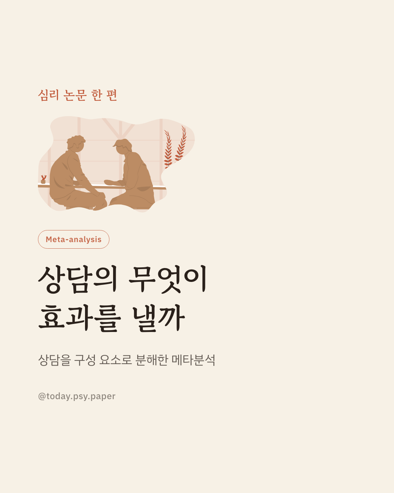
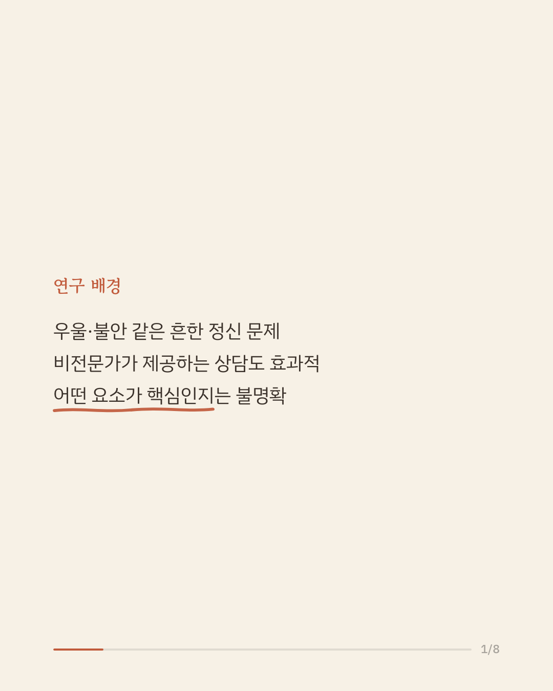
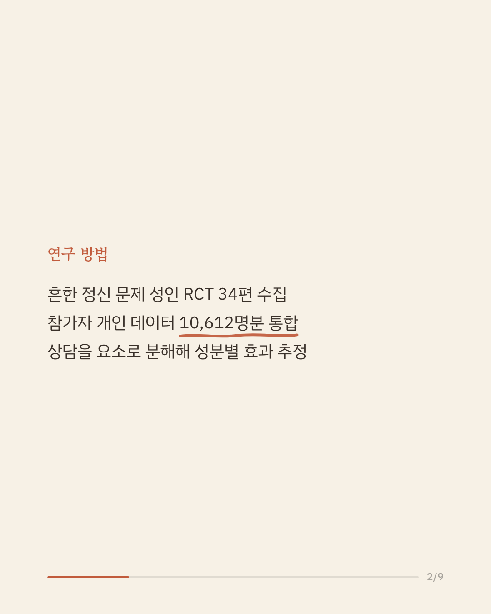
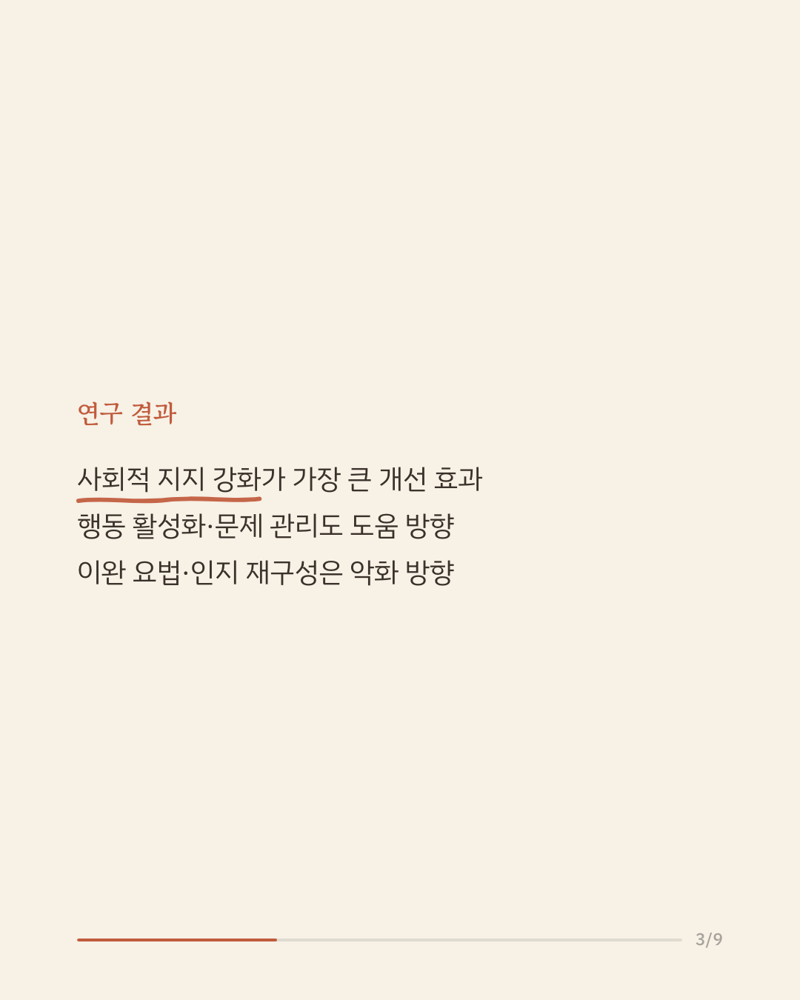
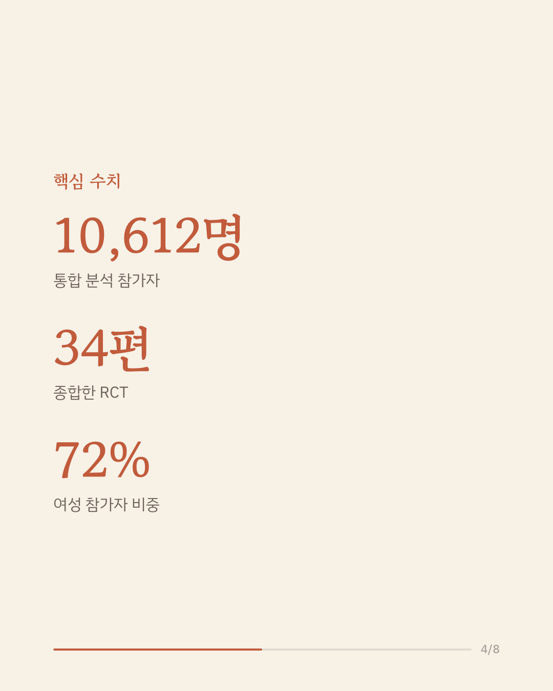
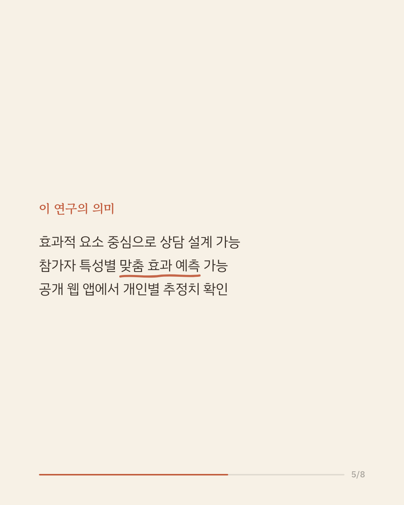
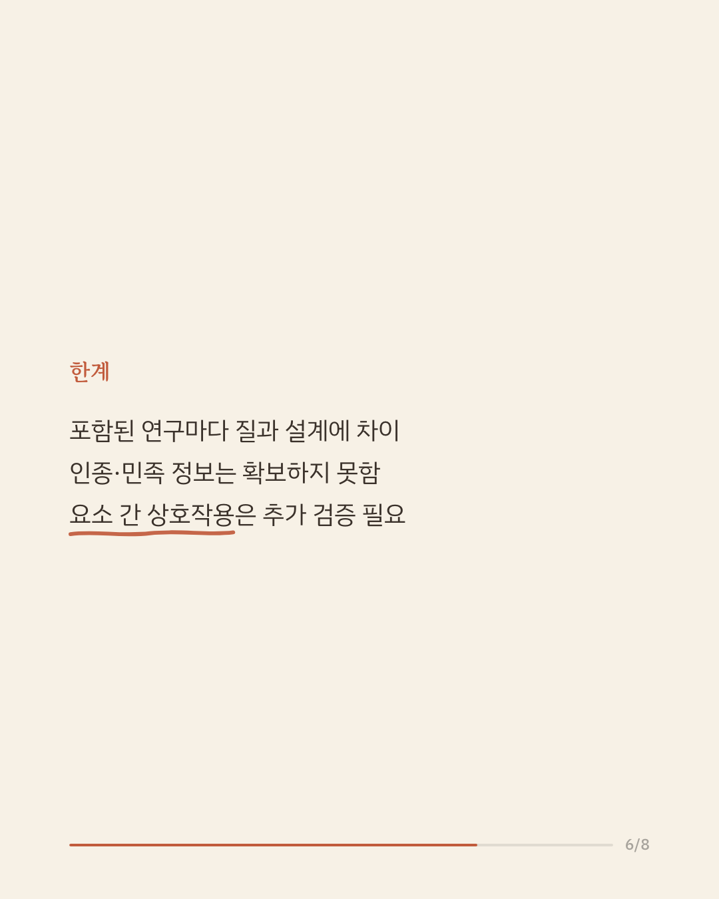
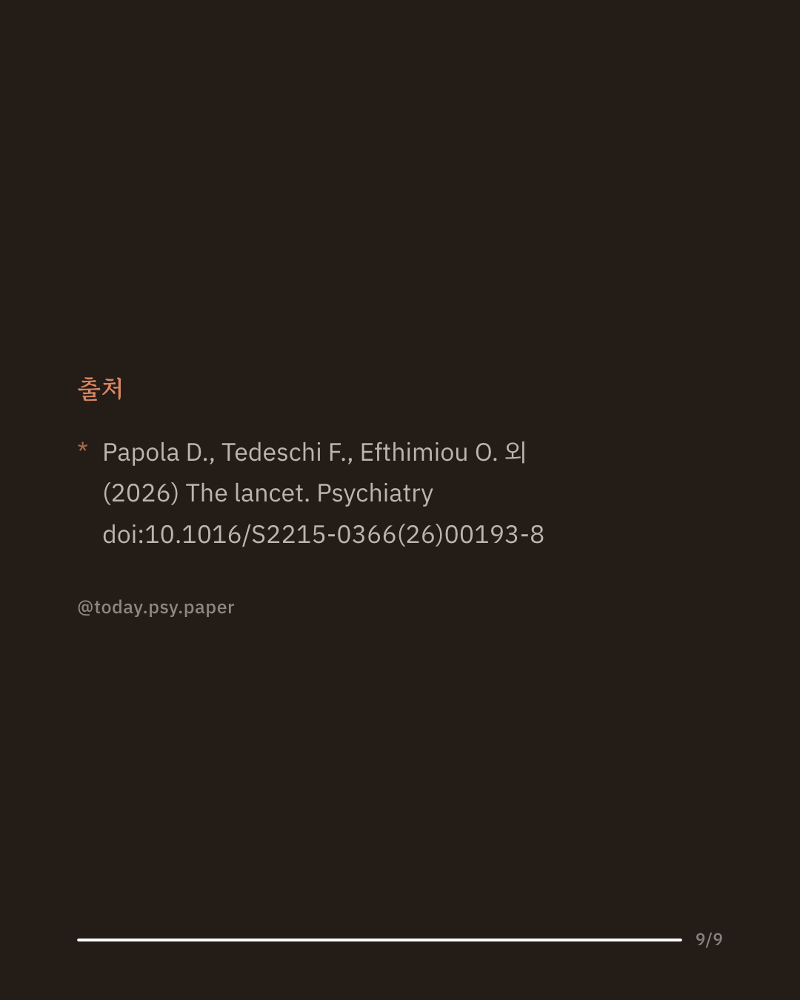

우울증과 불안 같은 흔한 정신건강 문제는 전문가가 아닌, 훈련된 상담 인력이 제공하는 심리사회적 개입으로도 상당히 호전됩니다. 다만 이런 상담을 이루는 여러 구성 요소 가운데 실제로 효과를 만들어내는 것이 무엇인지는 잘 밝혀지지 않았습니다. 연구진은 성인 대상 무작위 대조 시험 34편을 모아 참가자 1만 612명의 개인 데이터를 통합하고, 상담을 개별 요소로 분해해 각 요소의 효과를 비교했습니다. 분석 결과 사회적 지지를 강화하는 요소가 증상 개선에 가장 크게 기여했고, 행동 활성화와 문제 관리가 그 뒤를 이었습니다. 반면 이완 요법과 인지 재구성은 오히려 증상을 악화시키는 방향으로 나타났으며, 각 요소의 효과는 초기 증상 심각도와 사회인구학적 특성에 따라 달라졌습니다. 이 결과는 효과적인 요소를 중심으로 상담을 설계하고 개인 특성에 맞춰 효과를 예측할 수 있는 가능성을 보여 주며, 공개된 웹 애플리케이션으로 개인별 추정치를 확인할 수 있습니다. 다만 포함된 연구마다 질과 설계에 차이가 있고 인종·민족 정보가 확보되지 않았다는 제한이 있습니다. 단일 연구이므로 확대 해석은 조심해야 합니다. 출처: The Lancet Psychiatry (2026), 'Optimising and personalising task-shared psychosocial interventions for common mental disorders: a Bayesian component network meta-analysis of individual participant data' #임상심리 #정신건강정보 #심리치료 #심리학연구 #메타분석
python3 publish.py 42546730